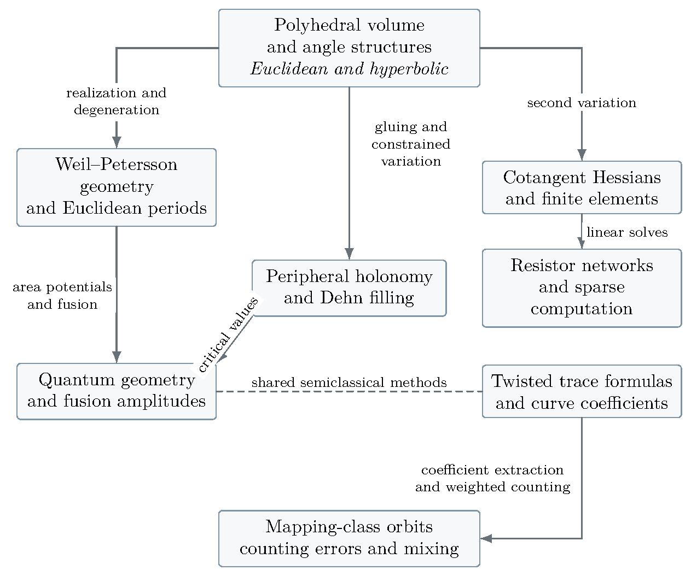

Abstract
Hyperbolic and Euclidean polyhedra, Weil–Petersson theory, mapping class groups, Dehn surgery, and quantum invariants admit a common approach through geometric variational principles. This monograph develops the connections between them. Volume and length functions determine geometric equations; their Hessians govern boundary response, numerical solution, and semiclassical amplitudes. Two quantum and semiclassical viewpoints enter: three-manifold invariants built from tetrahedral data, and Colin de Verdière’s finite-dimensional approach to surface trace formulas.
The comparisons yield several explicit results. In a prescribed final cone-angle chamber, the leading small-area coefficient of an exact Weil–Petersson volume polynomial is times the Thurston–Deligne–Mostow volume, where . At the flat weights and for , the same complex hyperbolic form is the logarithmic curvature of a continued unit-volume Liouville correlation; its finite four-point fusion and Hermitian area pairing are calculated explicitly. A pole-cleared quantum tetrahedral integral has a uniform Airy transition on the regular one-parameter family for bounded real transition parameters, including the first correction.
The computational strand connects the Casson–Rivin program to finite elements and resistor networks. For the planar prescribed-angle realization problem, the negative volume Hessian is twice the cotangent stiffness matrix. Its Schur complement describes boundary response, and its Gaussian determinant has a rooted-forest expansion. A compatible barrier supplies a path-following iteration bound with Laplacian linear subproblems. On a local geometric Dehn-filling branch, a holomorphic Legendre critical value recovers the volume germ to all orders. At a nondegenerate positive angle maximum, the inverse volume Hessian determines peripheral response. The normalized Gaussian Jacobian has the inverse-square-root dependence prescribed by peripheral torsion surgery; boundary torsion and solid-torus factors enter separately.
On surfaces, character-twisted trace data organize multicurves by length. A length-valued Euler product has isolated unit leading atoms, while a trace identity obstructs a perfect fixed linear selector of simple curves. Weighted counts imply mixing under precise endpoint hypotheses; a marked-torus model gives an explicit global correlation bound on the nonsquare genus-two stratum. Flat-point lower bounds and arithmetic transfer estimates separate the geometric and Möbius obstructions to sharp counting.
These results lead to a conjectural program: uniform quantum gluing and Dehn filling, effective extraction of connected-curve coefficients, weighted counting beyond the marked-torus model, and sharp norm-ball discrepancies. Established inputs, deductions proved here, conditional implications, and numerical evidence are distinguished throughout.
Introduction: the connections and the results
The organizing question is how information passes between apparently distant descriptions of geometric objects. A polyhedron can be studied through its intrinsic metric, its dihedral angles, its volume, or the conformal geometry of its boundary. A surface can be studied through geodesics, periods, character varieties, or a mapping-class quotient. Each description makes a different operation accessible: integration, optimization, gluing, quantization, or computation. The purpose of this monograph is to make the passages between these descriptions explicit.
Three operations recur. Variation produces a geometric equation and a Hessian. Elimination of internal variables produces a boundary response; the same Schur complement occurs in electrical networks, constrained volume optimization, and Gaussian integration. Degeneration tests the uniformity of a comparison, producing Euclidean limits, Airy transitions, cusp phenomena, and changes in numerical conditioning. These operations explain why the subjects belong together. Each comparison still has its own geometric space, measure, and normalization.
The computational interpretation is particularly useful. The companion study on Duffin networks and ideal polyhedra [118] identifies a volume Hessian with a cotangent finite-element matrix. Incorporating that identity here connects polyhedral realization to sparse linear algebra, and connects both to the later calculations of peripheral response and semiclassical determinants. Figure 1 gives a map of these connections. The arrows denote specified operations; the detailed statements identify which are exact, asymptotic, or conditional.

The principal results
The main conclusions fall into six groups. Their significance lies both in the individual formulas and in the transfer of information between the subjects. We give their precise scopes here; the cited sections contain the hypotheses, proofs, and original sources of the inputs.
Polyhedral geometry and moduli volumes. The ideal-polyhedral cells give a normalized partition function for genus-zero WP volumes. For fixed admissible deficit weights, the final-chamber identity (8.9) gives an exact class polynomial, and (8.11) identifies as the coefficient of in its small-area volume expansion, with . This makes the Euclidean period geometry a computable limit of the hyperbolic moduli-volume theory. The chamber, labels, and orbifold conventions are part of the formulas.
Quantum periods and a uniform degeneration. For , the exact identity (12.6) identifies the Thurston–Deligne–Mostow form with the logarithmic curvature of the continued unit-volume Liouville correlation at the fixed flat weights. The finite four-point period calculation determines its fusion matrix and Hermitian area pairing. Proposition 15.1 gives a separate uniform Airy theorem, with its first correction, for the specified pole-cleared tetrahedral integral on the regular one-parameter family and bounded real transition parameters.
Volume optimization, finite elements, and complexity. Proposition 9.1 identifies the negative volume Hessian with twice the cotangent stiffness matrix in the disk’s leading–trailing angle coordinates. Equations (9.9) and (9.11) give its boundary elimination and rooted-forest determinant. Proposition 9.2 supplies the compatible barrier and yields a quantitative path-following bound after initial centering. The distinction between a fast Laplacian solve and the full nonlinear realization problem makes the remaining feasibility, precision, and certification questions explicit.
Dehn filling through a critical value. Proposition 16.1 identifies the local filling volume with a holomorphic Legendre critical value as an equality of analytic germs. Thus every classical long-slope coefficient is fixed, including the Neumann–Zagier expansion. The inverse volume Hessian recovers the marked cusp quadratic form at a nondegenerate positive geometric angle maximum. The normalized Gaussian Jacobian agrees with the change of the inverse square root of peripheral torsion; the full smooth-filling amplitude also uses boundary torsion and solid-torus factors under the regularity hypotheses of (16.25). The transfer to a full quantum invariant is conditional on the representation, cycle, noncancellation, and competing-sector estimates stated in Proposition 16.2.
Length-sensitive reconstruction from trace data. Proposition 25.2 assigns each multicurve an isolated unit first atom in a length-valued Euler product. A fixed linear character functional cannot preserve every simple primitive trace while annihilating every nonsimple trace; the explicit obstruction is (25.7). Keeping the length and twisting data therefore matters. The construction supplies exact coefficient objects and finite isolation bounds, while uniform stability and effective extraction remain additional analytic questions.
Effective dynamics and the boundary of sharp counting. Theorem 27.4 is a converse from a specified weighted two-endpoint count to mixing, with control of derivative endpoint weights. Theorem 28.1 gives an explicit global correlation bound for the marked-torus model of the nonsquare genus-two stratum, with probability measure and the stated rotation norm. The strict-convexity, inverse-flatness, and arithmetic transfer results then identify the separate geometric and Möbius inputs needed for sharp primitive counting. The proposed remainder is a question to be decided, not a conclusion of these results.
The conjectural program
The larger quantum-volume problem asks whether controlled local tetrahedral asymptotics can be assembled into uniform asymptotics of three-manifold invariants, including Dehn filling. The local critical value and the Gaussian surgery factor specify two necessary matching conditions. Global gluing and contour estimates are the next steps. On the surface side, the coefficient constructions suggest a route from spectral data to effective connected-curve counting. The weighted mixing converse specifies the estimate that route would have to produce, including endpoint regularity and cusp control.
Two further questions join the computational and counting strands to this program. Can geometric angle bounds and verified linear solves turn variational existence into useful complexity and certification theorems beyond the planar model? Can the fine geometry of a torus norm ball provide the quantitative discrepancy modulus needed to decide the linear-error question? Section 32 states these targets alongside the other open problems, without assigning an answer where the evidence does not yet support one.
Structure and routes through the monograph
The exposition is divided into seven parts. A first reading assumes undergraduate linear algebra, calculus, and basic topology of surfaces. Specialist constructions receive working definitions and small examples where they enter; later proofs use complex analysis, differential geometry, and spectral theory, with their external inputs identified locally. A reader can first follow the geometric question and worked calculation, then return to the estimates that make the comparison rigorous. The quantum introduction is written for geometers who do not assume familiarity with state sums, recoupling coefficients, conformal blocks, or stationary-phase terminology. Later calculations can be read after that introduction or reached directly through the result map above.
| Part | Subject | Main passage |
|---|---|---|
| I | Polyhedra and moduli measures | Angle cells, WP volume, and Euclidean periods |
| II | Variational geometry and computation | Volume Hessians, finite elements, and complexity |
| III | Quantum geometry, degeneration, and surgery | Tetrahedral amplitudes, fusion, and peripheral response |
| IV | Curves, trace formulas, and quotients | Geodesic identities and length-valued coefficients |
| V | Mapping-class dynamics and mixing | Weighted orbit counts and the marked-torus model |
| VI | Sharp counting and arithmetic | Flat norm balls, diagnostics, and Möbius cancellation |
| VII | Open problems and conjectural directions | The estimates and geometric comparisons still required |
A geometric route runs through Parts I–II and the classical Dehn-filling calculation in Part III. A quantum route begins with Section 10, then follows the period, fusion, Airy, and surgery comparisons. A surface and spectral route begins with the geodesic identities in Part IV and continues through Parts V–VI. For computation, Section 9 leads to the inverse-Hessian response in Section 16 and the counting diagnostics in Section 30. These routes share definitions and normalizations rather than requiring every calculation to be read in order. The trace and coefficient constructions in Sections 23–25 use closed surfaces of genus at least two; the later sharp-counting diagnostics return to the once-punctured torus.
Conventions and computational evidence.
Appendix B collects the measure, angle, trace, curve-counting and time conventions, with references to their defining statements. The repository guide book/computational-status.md maps the chapter formulas to maintained computational recipes, recorded results and their limits. Paths printed in the computational notes are relative to the repository root. Each result retains its own source, precision and review record; revising the prose does not rerun that computation.
Provenance and mathematical status.
This research monograph grew from a mathematical discussion and includes both exposition and deductions from the cited literature. The supplied igorrivin/ipoly snapshot contributes the companion manuscript and its numerical scripts; Section 9 incorporates its core variational and computational arguments. Numerical checks are identified where they occur. A theorem proved for a normalized local integral, a specified stratum, or a conditional weighted count retains that scope when it is used elsewhere in the monograph.
Acknowledgment.
The author acknowledges substantial help from Codex in preparing and revising this monograph and its computational companions.
License and credit.
Copyright 2026 Igor Rivin. The monograph text, original figures and TeX sources are licensed under CC BY 4.0, except separately credited third-party material. Newly authored companion code uses the MIT license; the scope and retained notices are in LICENSES/README.md.